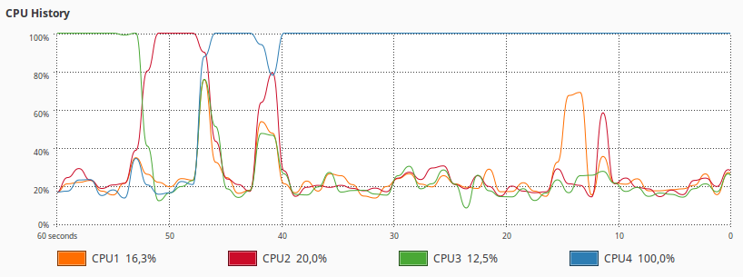

Practical Machine Learning Course Submission
This is my submission for the Practical Machine Learning Course. I approached this project in the following fashion:
- Exploratory Data visualization using Weka
- Data preprocessing
- Testing different types of machine learning algorithms
- Optimization of Random Trees algorithm
- Prediction result analysis
- Complete R Script
- References
Exploratory Data visualization using GGPlot
The PML training set consists of over a hundred of different variables. Using GGPlot, I could easily visualize the data to explore any obvious patterns and necessary preprocessing steps. These diagrams were generated with the following code: ggplot(allData, aes(x=attribute, fill=classe)) + geom_histogram(). One of the most relevant discoveries was related to the variation within the data. A large amount of attributes showed very little variance within their values. If this data is used for prediction, small outliers may significantly bias the predictor by inducing overfitting on that variable. An example is given in figure 1, below.


Data preprocessing
Data preprocessing involved several steps. First, NA values were replaced with 0 by using the following command: sed 's/NA/o/g' ./pml-training.csv > ./pml-training-nona.csv. This yields a csv file without the NA, which were causing problems when loading.
In addition, before any training takes place, the columns containing metadata were filtered from the training and test sets. These columns included the ID, the username, the window columns, and the timestamps. The username was picked as metadata, as the person executing the training excercise seemed unlikely to affect the classe of the assignment. Additionally, the name of the person executing a training excercise has very little impact on any results when applying this model to a real life situation.
Low variation data exclusion
As mentioned in the exploratory data visualization section, a large array of variables can be shown not contain significant variation in their data. This results in data that is either useless for machine learning, since its presence does not indicate a certain class, or can even lead to overfitting. Using R's NearZeroVar function allowed me to filter these attributes, resulting in a leaner, more relevant dataset. As a pleasant side effect, having less attributes to train on yielded lower training times. The freqCut argument was set to 95/45, as it yielded the best filtered results upon visual inspection of the data variation.
Principal Component Analysis
The initial data visualization step revealed a number of attributes showed very similar patterns. With principal component analysis we can merge these attributes to a more compact, more bias resistant variable. This also yields a reduced amount of attributes, improving training speeds.
Testing different types of machine learning algorithms
As our data is very much non-linear, I decided to select a number of algorithms suited for this specific data distribution. The following algorithms were selected:
- RandomForest
- Parallel Random Forest
- AdaBoost (non-bagged)
- AdaBoost (bagged)
- Model Averaged Neural Network
- Naive Bayes
- Stochastic Gradient Boosting
- Linear Discriminant Analysis
The Linear Discriminant Analysis Model was added as a benchmark, to find how effective algorithms better suited for non-linear data perform compared to linear optimized algorithms. The detailed results for each of these algorithms can be found in the Github repository. The results are summarized in table 1. You can click on the headers to sort the results.
| Algorithm | Accuracy score | Time taken (seconds) | Seconds per percentage point |
| RandomForest | 0.9628 | 1394.734 | 14.49 |
| Parallel Random Forest | 0.9623 | 726.125 | 7.54 |
| AdaBag | 0.42 | 2979.114 | 70.92 |
| Linear discriminant analysis | 0.4708 | 14.256 | 0.302 |
| Stochastic Gradient Boosting | 0.7581 | 651.031 | 8.58 |
| Adaboost | 0.6842 | 8377.779 | 122.43 |
| Model Averaged Neural Network | 0.5929 | 1639.671 | 27.64 |
| Naive Bayes | 0.556 | 696.021 | 12.51 |
Both algorithms based on RandomForest yield the highest accuracy scores for the tests. The Parallel Random Forest algorithm, however was almost twice as fast. This is further analyzed in the "Optimization of Random Forest algorithm" section below.
Most bagged methods, including Neural networks and both AdaBoost based functions scored comparatively poorly, especially considering the time required for each to complete their training. This makes these algorithms unsuitable in both aspects.
Interestingly, the linear discriminant analysis algorithm excelled at speed, but yielded poor prediction results. This method could only be preferred for very large datasets, where accuracy is trumped by a need for fast results. The poor prediction fit does confirm the assessment of the dataset as being non-linear.
In conclusion, the RandomForest based algorithms were chosen for further analysis.
Optimization of Random Forest algorithm
The Random Forest algorithm depends on a large amount of trees being generated. The default for the caret package is set to 300+ trees. However, analysis using Weka [1] shows that using a smaller amount of trees (~100) results in very similar performance, with just a few percentage points difference in accuracy. Using less trees for this algorithm will result in faster training for neglible accuracy loss. The caret package does not support changing the n_trees argument for the Random Forest algorithm.
An example of this is shown with the Parallel RandomForest algorithm. This implementation has a lower n_trees argument of 250. Profiling the code unfortunately showed no real world parallelization in my instance, but lowering the amount of trees still increased speeds by almost 50%. There was no significant impact on accuracy. I project a further increase in speed if the parallelization is actually fully enabled.
Prediction result analysis
As the Parallel Random Forest algorithm showed the most promise, this is what I will be using to predict the values for the test set. A full analysis of the results produced by this algorithm is included below.
| Prediction/Reference | A | B | C | D | E |
| A | 1087 | 20 | 7 | 3 | 0 |
| B | 8 | 714 | 6 | 0 | 8 |
| C | 11 | 16 | 659 | 25 | 6 |
| D | 8 | 6 | 10 | 614 | 6 |
| E | 2 | 3 | 2 | 1 | 701 |
| Classe | Sensitivity | Specificity | Pos Pred Value | Neg Pred Value | Prevalence | Detection Rate | Detection Prevalence | Balanced Accuracy |
| A | 0.974 | 0.9893 | 0.9731 | 0.9897 | 0.2845 | 0.2771 | 0.2847 | 0.9817 |
| B | 0.9407 | 0.993 | 0.9701 | 0.9859 | 0.1935 | 0.182 | 0.1876 | 0.9669 |
| C | 0.9635 | 0.9821 | 0.9191 | 0.9922 | 0.1744 | 0.168 | 0.1828 | 0.9728 |
| D | 0.9549 | 0.9909 | 0.9534 | 0.9912 | 0.1639 | 0.1565 | 0.1642 | 0.9729 |
| E | 0.9723 | 0.9975 | 0.9887 | 0.9938 | 0.1838 | 0.1787 | 0.1807 | 0.9849 |
In conclusion, an overall accuracy of 96.23% was achieved, with a Kappa value of 95.23%. Based on the interpretations of multiple researchers[3][4] this constitutes an "Excellent" or "Near perfect" conformance to the data. As such, I deem this model as usable for the task at hand.
Complete R script
library(caret) require(doParallel) allData <- read.csv("pml-training-nona.csv",header=T) # Load training file variantData <- allData[,-c(nearZeroVar( allData, saveMetrics=F, freqCut = 95/45))] metaCols <- c(1,2,3,4,5,6) # Columns with metadata relevantData <- variantData[-metaCols] set.seed(1) dp <- createDataPartition(y=relevantData$classe, p=0.80)[[1]] trainingData <- relevantData[dp,] testingData <- relevantData[-dp,] # Shuffle data for testing purposes shuffledTesting <- testingData[sample(nrow(testingData)),] shuffledTraining <- trainingData[sample(nrow(trainingData)),] ctrl <- trainControl(preProcOptions = list(thresh = 0.8), allowParallel=T) trainN <- nrow(trainingData) testN <- nrow(testingData) ptm <- proc.time() # Clock time taken args<-commandArgs(TRUE) # Use of command line arguments allows for easier parallelization with a bash script. trainingMethod <- args[1] modelFit <- train( classe ~ ., data=shuffledTraining[1:trainN,], method=trainingMethod, trControl=ctrl, preProcess='pca' ) warnings() modelFit proc.time() - ptm # Stop the timer and echo result results <- predict(modelFit, newdata=shuffledTesting[1:testN,]) confusionMatrix(results, shuffledTesting[1:testN,]$classe)
Produced with the Pretty R syntax Highlighter[2]